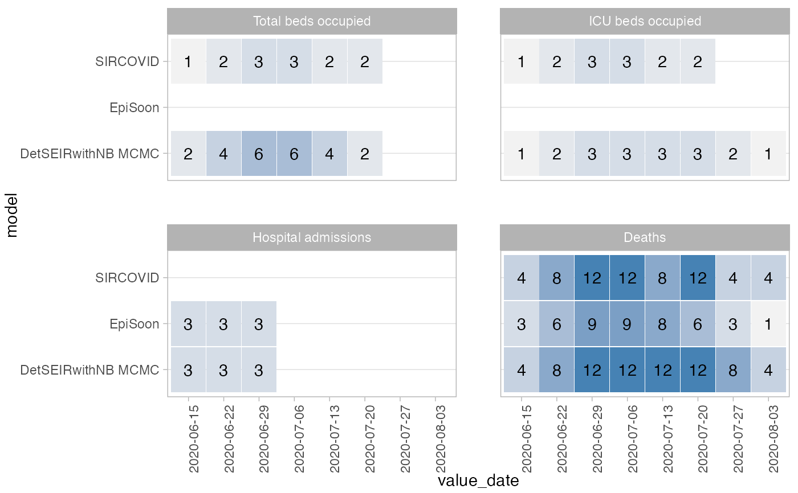

Visualise Where Forecasts Are Available
show_avail_forecasts( data, y = "model", x = "forecast_date", make_x_factor = TRUE, summarise_by = NULL, collapse_to_one = TRUE, by = NULL, show_numbers = TRUE, facet_formula = NULL, facet_wrap_or_grid = "facet_wrap", scales = "fixed", legend_position = "none" )
| data | data.frame with predictions in the same format required for
|
|---|---|
| y | character vector of length one that denotes the name of the column to appear on the y-axis of the plot |
| x | character vector of length one that denotes the name of the column to appear on the x-axis of the plot |
| make_x_factor | logical (default is TRUE). Whether or not to convert the variable on the x-axis to a factor. This has an effect e.g. if dates are shown on the x-axis. |
| summarise_by | character vector or |
| collapse_to_one | logical. If |
| by | character vector or |
| show_numbers | logical (default is |
| facet_formula | formula for facetting in ggplot. If this is |
| facet_wrap_or_grid | character. Use ggplot2's |
| scales | character. The scales argument gets passed down to ggplot. Only necessary if you make use of facetting. Default is "fixed" |
| legend_position | character that indicates where to put the legend. The argument gets passed to ggplot2. By default ("none"), no legend is shown. |
ggplot object with a plot of interval coverage
example1 <- scoringutils::range_example_data_long show_avail_forecasts(example1, x = "value_date", facet_formula = ~ value_desc)